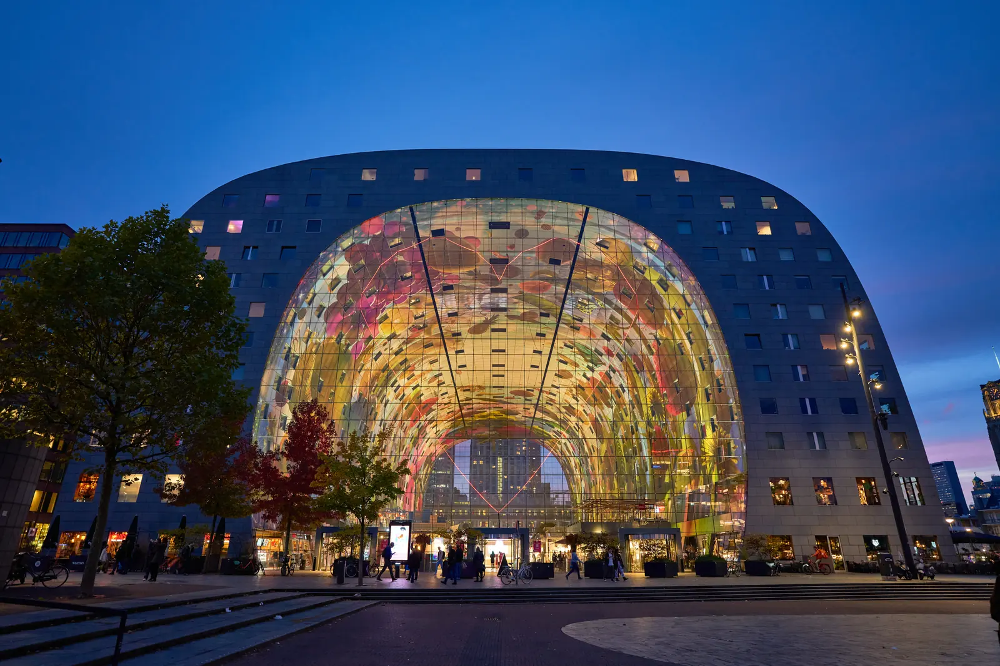

Scoping call
We understand the organisation, the decision ahead, and what success would look like.
Placeholder — no member accounts exist yet
This branch has no login. The control is here to show where a member area would sit, not to imply one is running. Current members are reached by email.
delft.rotterdam@180dc.org
We work with almost any organisation doing good. A team of 4–6 student consultants and a dedicated Team Leader delivers uniquely affordable strategy through one full consulting cycle.
Rotterdam · Markthal 3 / 5
Photo: Radek Kucharski · CC BY 2.0
Start here
There is no form and no application. An email is the whole process, and it does not need to be a polished brief.
Three things are enough to start: who you are, what the challenge is, and what a useful answer would let you decide. If the problem is still vague, say that. Working out the real question is part of what the first conversation is for.
Our focus is social impact, but it is not a gate. Out-of-scope inquiries are welcome, and the branch takes projects case by case.
Consulting cycles: October–January and March–June. If you reach us between cycles, we will tell you when the next one opens rather than leave you waiting.
One consulting cycle
The engagement follows the cycle rather than a made-up week count. Scope and cadence adapt to the organisation and the problem.
We understand the organisation, the decision ahead, and what success would look like.
Scope, deliverables, ways of working, and responsibilities are written down before work begins.
4–6 consultants and a Team Leader research, test, and build the recommendation with regular check-ins.
You receive the final strategy deck and every underlying analysis used to reach it.
Our work
Every engagement ends in a decision you can act on, with the reasoning left visible. These are the shapes that reasoning takes.
Each exhibit is rebuilt for the web from a real deliverable, and stripped of anything that identifies the organisation. The reasoning and the recommendation are the ones that were given. The layout is not: a page built for A4 does not survive a phone, so we set it again rather than photograph it.
Placeholder — named case studies await client consent. These exhibits are anonymised method, not client results.
Market assessment
An organisation choosing which product line to take into an unfamiliar business market.
Delivered: a ranked shortlist, with every criterion and trade-off on one page.
See the exhibitsOperating strategy
A rural development organisation deciding which livelihoods to back first, and in what order.
Delivered: a staged plan naming what happens now, next and later.
See the exhibitsFinancial sustainability
A charity whose income depended on a single grant, deciding what to build alongside it.
Delivered: two funding routes to pursue first, and the reason the others wait.
See the exhibitsMarketing and engagement
A small foundation with no consistent presence on the channels its supporters use.
Delivered: a posting rule simple enough to survive a volunteer handover.
See the exhibitsDigital presence
A materials company whose sustainability story was crowding out what it actually sells.
Delivered: a positioning call the client could disagree with, and the evidence for it.
See the exhibitsMarket assessment
The organisation had ten candidate product lines and no shared way to compare them. The work was not picking a winner. It was making the comparison something the board could check.
Operating strategy
Several strategic choices competed for the same limited capacity. Connecting them into one sequence mattered more than analysing any one of them further.
Financial sustainability
One grant carried most of the income. The question was not how to replace it, but what to build beside it that a small team could actually run.
Marketing and engagement
The organisation posted when someone remembered. The fix was not more content. It was a rule simple enough to hand to whoever holds the account next year.
Digital presence
A sustainable-materials company led every message with sustainability. The recommendation was to stop, and it was a call the client was free to reject.
Six starting points
These are the branch's current service areas. We assess every project individually, and out-of-scope inquiries are welcome.
Putting the right tools and processes in place so a small team stops losing hours to manual work.
Reaching the audiences your mission serves, and the donors and volunteers who sustain it.
Building funding models and cost structures that survive beyond the next grant cycle.
Evidence on where demand, partners, and competition actually are before you commit resources.
Finding where effort leaks out of your processes and redesigning them around your capacity.
Defining and tracking the numbers that prove your work works, for boards and funders.
Next step
A short conversation is enough to see whether the challenge, timing, and cycle fit.